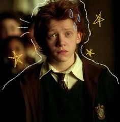

Рон Уизли — рыжеволосый ходячий сплошной свитер с глазами, который умеет быть героем, но чаще — живой катастрофой. Он ест так, будто каждая булочка управляет временем, а заклинания летят туда, куда им хочется, особенно если рядом паук или кот. Его стратегия в опасности проста: кричать «Я попробую!» и смотреть, как мир решает сам, выживет он или нет.
Рон страшится пауков, темноты и собственной тени, но при этом способен спасать друзей, падая с лестницы и случайно открывая порталы в другие измерения. Он саркастичен, непредсказуем и иногда настолько храбр, что кажется, будто храбрость — это отдельный персонаж, живущий внутри него. И при всей этой нелепости невозможно не любить его, потому что он превращает каждый день в магическое хаотическое шоу.